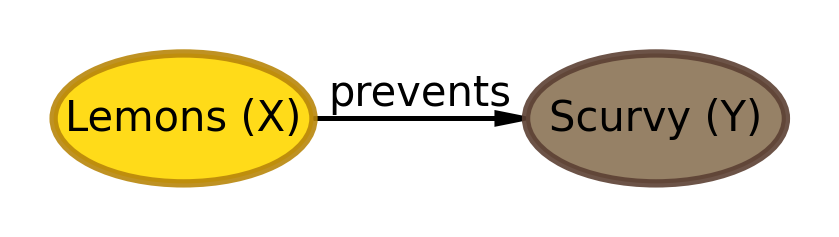
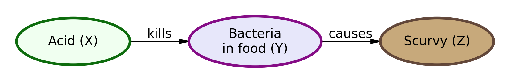

Scurvy was a devastating disease that affected sailors on long voyages. The cure was discovered in 1747, but due to a misunderstanding about the cause, the cure was lost for over 150 years. The story involves three different understandings of the data generating process:
1747 Understanding: Lemons prevent scurvy (correct but incomplete!)
Misguided Belief: Acid kills bacteria that causes scurvy (wrong!)
1928 Understanding: Vitamin C prevents scurvy (the real mechanism)
DAG 1: The 1747 Understanding (Correct but Incomplete)
Historical Context: In 1747, James Lind discovered that lemons prevent scurvy through a controlled experiment. However, the understanding was incomplete - they knew lemons worked but not why.
import daftpgm = daft.PGM(dpi=150, alternate_style="outer")# Lemons node (yellow - light fill for black text contrast)pgm.add_node("lemons", "Lemons (X)", 0.5, 1, aspect=2.4, scale=1.3, plot_params={'facecolor': 'lemonchiffon','edgecolor': 'darkgoldenrod','linewidth': 2,'alpha': 0.95, })# Scurvy node (lightened tan so black text is readable)pgm.add_node("scurvy", "Scurvy (Y)", 3.5, 1, aspect=2.4, scale=1.3, plot_params={'facecolor': '#C4A574','edgecolor': '#5C4033','linewidth': 2,'alpha': 0.95, })pgm.add_edge("lemons", "scurvy", label="prevents")pgm.render()

DAG 2: The Misguided Belief (Wrong Understanding)
Historical Context: Over time, people came to believe it was the acid in lemons that killed bacteria which was causing scurvy. This led to lemons being replaced by limes (cheaper but less Vitamin C) or just using acids like vinegar, causing scurvy to return.
import daftpgm = daft.PGM(dpi=150, alternate_style="outer")# Acid node (green - light fill for readability)pgm.add_node("acid", "Acid (X)", 0, 1, aspect=2.4, scale=1.3, plot_params={'facecolor': 'honeydew','edgecolor': 'darkgreen','linewidth': 2,'alpha': 0.95, })# Bacteria in food node (larger so two-line label fits)pgm.add_node("bacteria", "Bacteria\nin food (Y)", 2.5, 1, aspect=2.6, scale=1.4, plot_params={'facecolor': 'lavender','edgecolor': 'purple','linewidth': 2,'alpha': 0.95, })# Scurvy node (lightened tan for text contrast)pgm.add_node("scurvy", "Scurvy (Z)", 5, 1, aspect=2.4, scale=1.3, plot_params={'facecolor': '#C4A574','edgecolor': '#5C4033','linewidth': 2,'alpha': 0.95, })pgm.add_edge("acid", "bacteria", label="kills")pgm.add_edge("bacteria", "scurvy", label="causes")pgm.render()

DAG 3: The 1928 Understanding (Complete and Correct)
Historical Context: In 1928, the true mechanism was discovered - it was Vitamin C (ascorbic acid) that prevented scurvy. This complete understanding finally explained why lemons worked and why the acid theory was wrong.